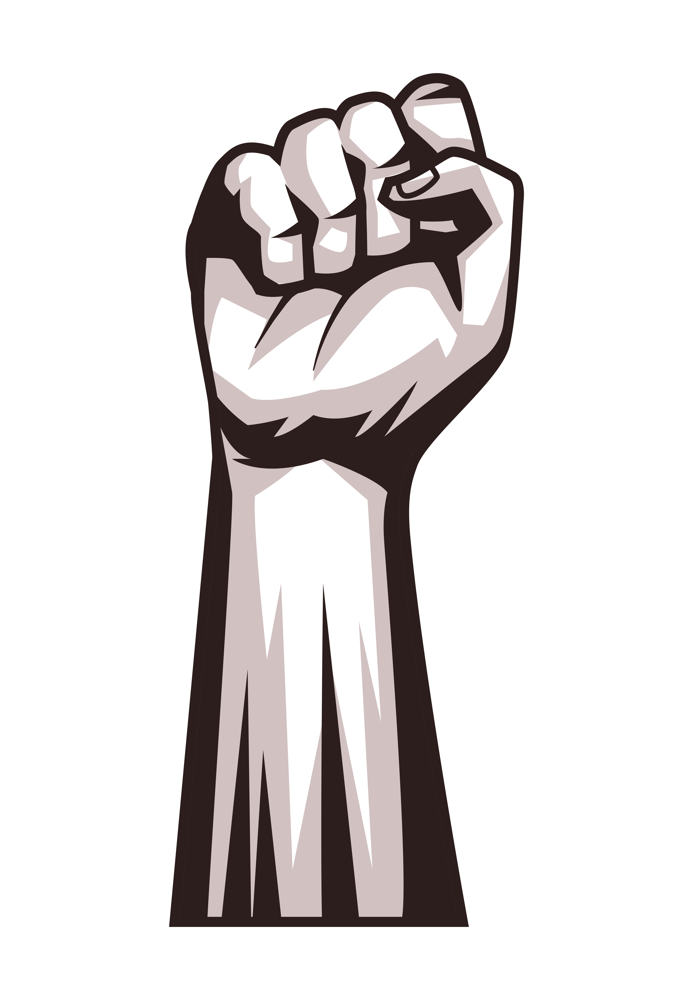

Art as a Voice Against Injustice
Exploring the impact of protest art on the Philippine 'War on Drugs'.


An overview of the campaign and its consequences.
When President Rodrigo Duterte took place in June 2016, he immediately implemented the War on Drugs campaign. The campaign aimed to address the country’s increasing drug problem. President Duterte even made a bold statement, promising to eradicate the drug problem in the country within 6 months. The campaign was done through “Oplan Tokhang”, where police personnel does a house-to-house raid to subdue possible suspects. This action of the Duterte Administration quickly received a lot of controversies,
not just within the country, but all around the world. Throughout the process of clearing drug syndicates in the country, thousands of Filipinos were killed in police operations by either being targeted or caught in cross-fires. Victims of such killings accused the government of extrajudicial killings because even innocent people were affected by these police operations. Some critics have argued the ineffectiveness of the campaign because only small-time pushers were captured, leaving the wealthier ones with less consequence.
Through the early years of the War on Drugs, Metro Manila received the most beatings from the Oplan Tokhang, receiving approximately 42% fatality rate. This is because most of the circulation of drugs happens within these areas. Included in these fatalities are the thousands of people who died during the campaign. Eventually, around 2018 the focus of the Philippine National Police shifted to Central Luzon, specifically to Bulacan and Nueva Ecija, which is relatively close to the NCR. Although the reason for this shift of focus of the government is unclear, Central Luzon became the “killing den” of the Oplan Tokhang having a rising fatality rate of around 18%. Before the end of the Duterte Administration, it was evident that the fatality rate of Nueva Ecija rose to around 13% surpassing both NCR and Bulacan at that time. These data only consist of places around Central Luzon which heavily implies that these were the areas where a lot of people inhumanly lost their lives through abusive governance. These numbers represent how many families are broken and the communities left in fear. It shows how this campaign is full of flaws, where it caused more societal problems rather than solving an existing one.
Analyzing existing artworks and creating our own.
Feugiat accumsan lorem eu ac lorem amet ac arcu phasellus tortor enim mi mi nisi praesent adipiscing. Integer mi sed nascetur cep aliquet augue varius tempus lobortis porttitor lorem et accumsan consequat adipiscing lorem.

How art influences change and our personal reflections.
Feugiat accumsan lorem eu ac lorem amet ac arcu phasellus tortor enim mi mi nisi praesent adipiscing. Integer mi sed nascetur cep aliquet augue varius tempus lobortis porttitor lorem et accumsan consequat adipiscing lorem.
Iaculis ac volutpat vis non enim gravida nisi faucibus posuere arcu consequat
Feugiat accumsan lorem eu ac lorem amet accumsan donec. Blandit orci porttitor.
Feugiat accumsan lorem eu ac lorem amet accumsan donec. Blandit orci porttitor.
Feugiat accumsan lorem eu ac lorem amet accumsan donec. Blandit orci porttitor.
Feugiat accumsan lorem eu ac lorem amet accumsan donec. Blandit orci porttitor.
Feugiat accumsan lorem eu ac lorem amet accumsan donec. Blandit orci porttitor.
Feugiat accumsan lorem eu ac lorem amet accumsan donec. Blandit orci porttitor.
Just to test html stuff